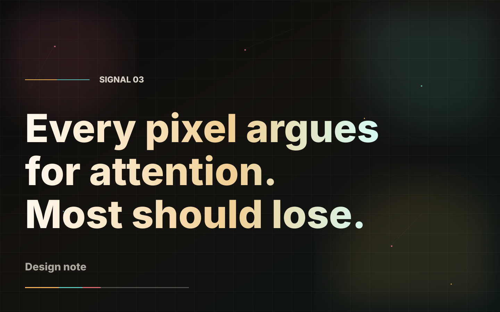
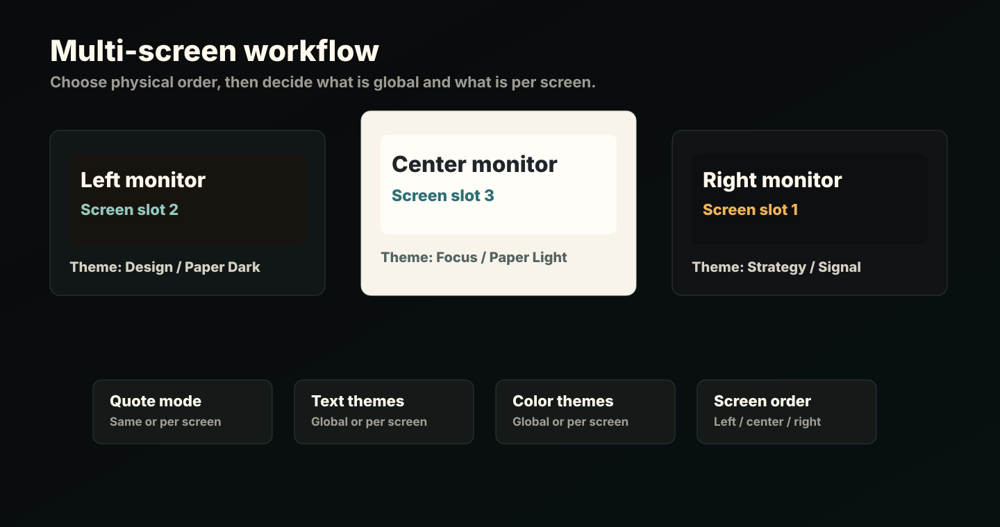

Codex / Claude prompt
Copy one prompt. Build only after checks.
The prompt verifies origin, source, scripts, signatures, hashes, and build output. It also tells the agent not to disable Windows security.
Open promptSignalWall by Nestcells
A quiet open-source wallpaper host for Windows screens that should feel intentional.
Unsigned alpha. The recommended path is source verification, local build, then launch.
Safer install
SignalWall gives users a prompt for Codex, Claude Code, or an equivalent local agent. The agent inspects the repository, builds locally, and reports findings before anything runs.
Codex / Claude prompt
The prompt verifies origin, source, scripts, signatures, hashes, and build output. It also tells the agent not to disable Windows security.
Open promptClone the official repository.
Inspect source, scripts, workflows, and dependencies.
Build locally and report findings before launch.
Product



Release status
The release binary remains available for transparency, but source verification and local build are the recommended route until a signed installer exists.
Open GitHub release